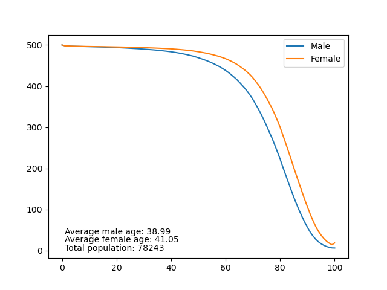

从生育率谈起
本文最后更新于：9 个月前
从生育率谈起
所谓总和生育率，就是一个妇女一生中生育儿女的数量。一夫一妻的社会中，生育率需要维持在2以上才可以保持人口的稳定。Wiki 上则指明由于婴儿夭折等原因，总和生育率需要达到2.1才能达到时代更替水平。简单理解就是，一夫一妻，生两个孩子才能保持人口不会下降。
然而我们惯常用来衡量人口变化的并非是生育率，而是出生率。所谓出生率，就是一年中新生儿和总人数的比值。直观想来，更高的生育率会带来更高的出生率。然而出生率还有一个重要的决定因素，那就是育龄人口。即使社会中生育率不高，但如果育龄人口充足的话，出生率也许也会很高，自然增长率保持为正值，但人口锐减的危机，已经埋下了伏笔。
七十年代之前，中国的生育率是很高的，经常保持在高于6的状态；而到了独生子女政策推行之后，随着经济水平的提高，生育率出现了显著下降。到了新世纪，生育率进一步下降，由于统计口径和其他原因的影响，并没有一个非常准确的生育率数据。但生育率低于世代更替水平是毋庸置疑的。刚刚结束的第七次人口普查显示，2020年我国的生育率为1.3，在全世界也属于是非常靠后的水平了。当然不只是大陆这样，港澳台也是如此，而我们的东亚邻居，日本韩国，情况也不容乐观。
我并不是社会学家，我不知道生育率降低是好是坏，更不知道我们应该做些什么；巧的是许多数据都会在网上公开，我便整理推算了一下。以下的结果，既不保证可靠，也不保证有什么说明性，更难说和真实情况到底有几分相似。只是无聊时好奇心作祟罢了。
数据与结果
谈及中国的情况之前，先来看一下一个稳定的社会会是什么样的。下图就是一个稳定的社会，每年的出生人口固定为1000。死亡率则设定为中国2010年普查的结果。

那中国的情况是什么样呢？我们以2020年的年龄分布为基础，假设未来一直保持2010年的生育率和死亡率，做出了下图。

我们能看到什么呢？
- 如今的年龄分布并不平滑，有几个高峰，也有几个低谷，想来是有原因的。
- 三十年，社会的平均年龄便会增加十岁。十年，少年子弟江湖老，父母青丝成白发。
- 当今不到二十岁的一代，是人口下降过程中的最后一点回波。
- 众位年龄会大幅后推，这还是在医疗水平维持现状的基础上。
- 以上的预测肯定都是错误的，因为这不是一个稳定的社会，而当今的数据也肯定不能说明未来。
本博客所有文章除引用外，均可随意更改转载，无须署名。